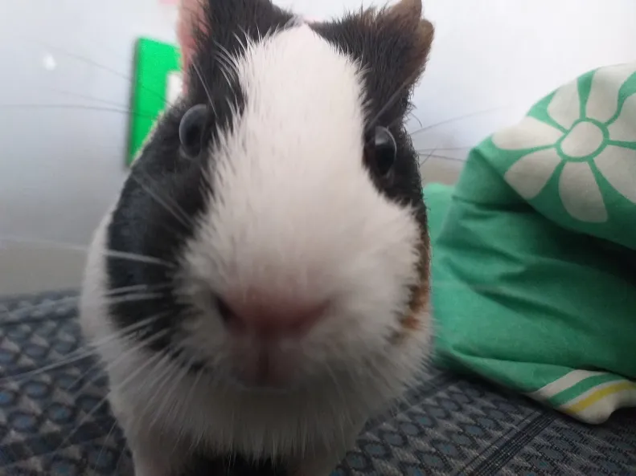
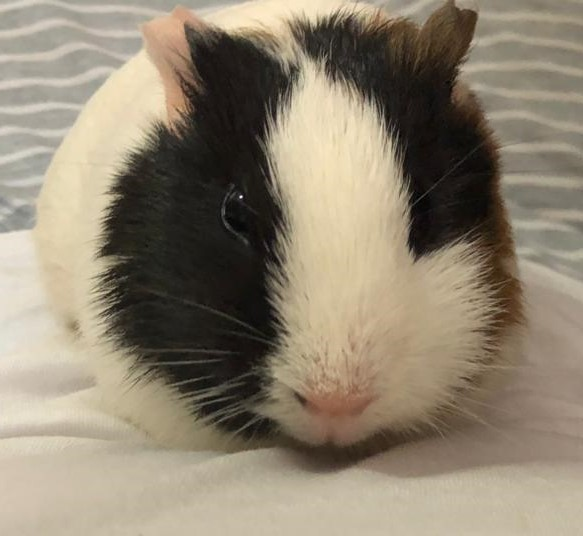
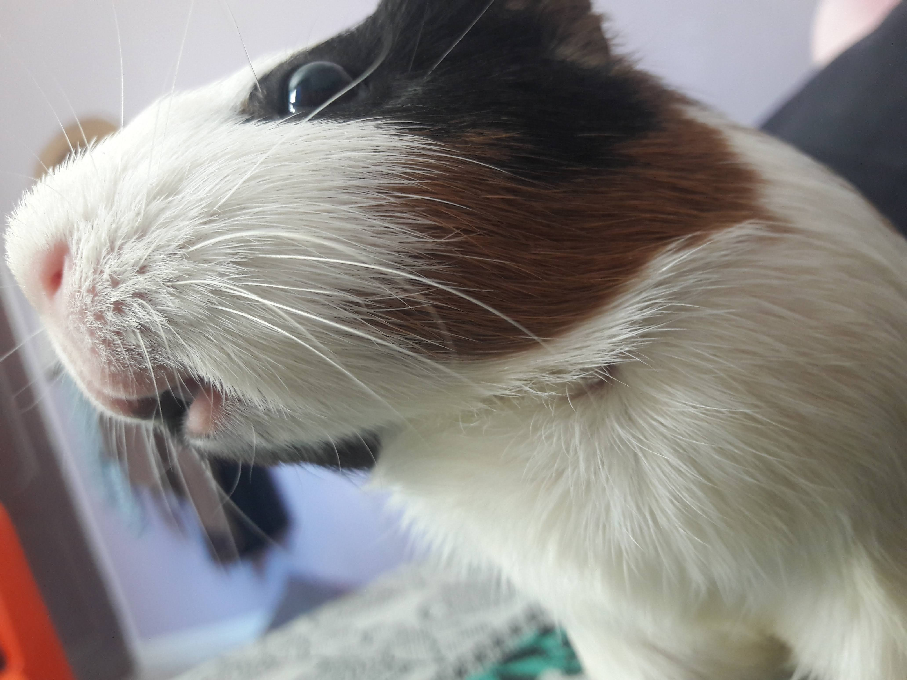
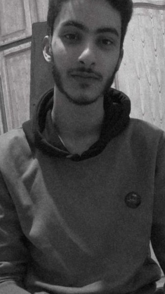

Gawa's Very First Website
I'm Learning Web Development
I'll be showing you what i have created recently all together in a signle webpage
Go Bottom
Top Movies, Anime, Games And Series
- Saw: (Movie)

I consider this movie one of the greatest, primarily because the characters are exceptionally well-written.
I don't perceive it as a horror film but rather as a philosophical one. It's a must-watch.
- Lost: (Serie)

The survivors of a plane crash find themselves stranded on a mysterious island.
They are forced to work together for their survival when they realise that they are not alone on the island.
- A Plague Tale: Innocence: (Game)

A Plague Tale: Innocence is an action-adventure stealth game developed by Asobo Studio
and published by Focus Home Interactive.
The game was released for PlayStation 4, Windows, and Xbox One in May 2019.
- Re:zero: (Anime)

Re:Zero: Starting Life in Another World, often referred to simply as Re:Zero
and also known as Re: Life in a different world from zero, is a Japanese light novel series written
by Tappei Nagatsuki and illustrated by Shin'ichirō Ōtsuka.
It's My Guinea Pig's Birthday
On The 1st January

What To Bring:
Birthday Plans:
- Take Picture With Guinea Pig
- Touch Guinea Pig
- Get Bite By Guinea Pig
- Feed Guinea Pig
Birthday's Location:
Visit Here
More Pictures of My Guinea Pig


Information About Guinea Pig
Guinea Pigs have a robust body with short limbs, large head and eyes, and short ears.
The fur varies in length, texture, and colour.
The feet have hairless soles and short sharp claws.
There are four toes on the forefeet and three on the hind feet.
For More Information You Can Call This Number
Call Gawa
About Me Project
Information About Me
General Information About Me.
This is Me Abderrahmen aka Gawa:

Hello there, I'm pleased to learn that you want to get to know me a bit better.
As mentioned, my name is Abderrahmen, and I'm currently exploring the field of Web Development.
While I'm still in the early stages of my programming journey and don't possess extensive knowledge,
I can confidently say that I'm dedicated to learning. I'm optimistic that with time and effort, I will become an accomplished web developer.
Future Plans:
So, I don't particularly enjoy programming, but I'm learning it because I see it as my only remaining option.
As you know, my true interest lies in Medicine. Therefore, I'm pursuing Web Development to generate income over the next 2-3 years,
with the ultimate goal of funding my studies in Medicine.
For More Information You Can:
Email Me
Go Top